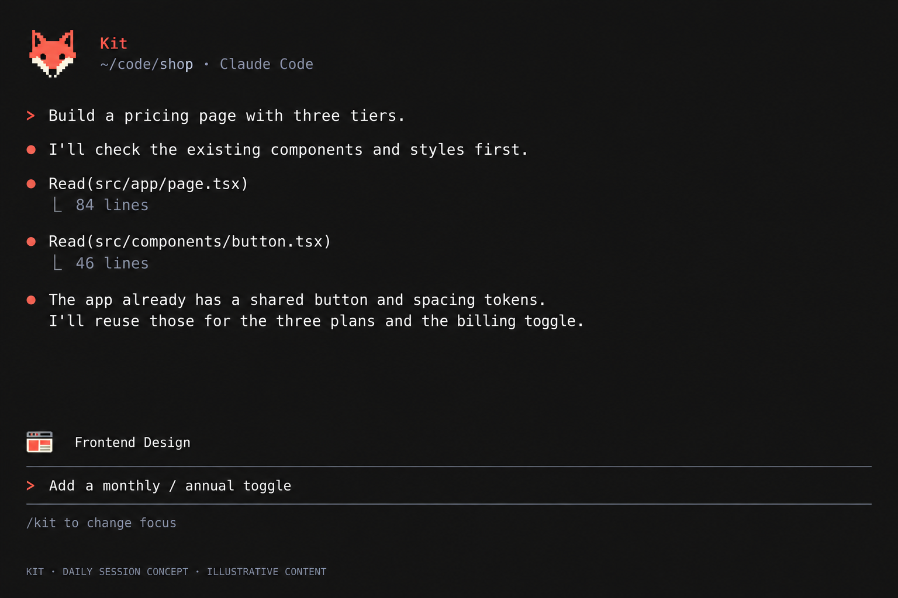
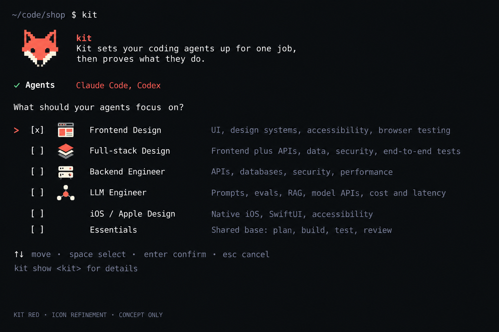
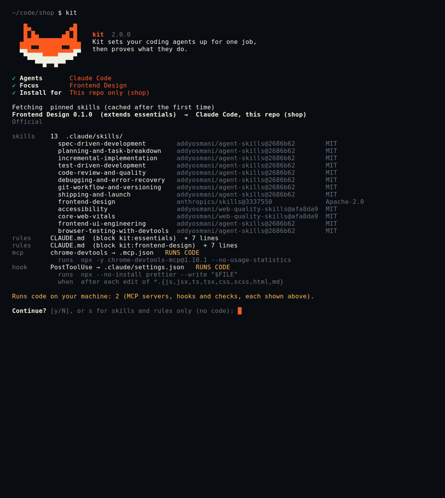

Inspect the exact code assets
New: playful first-launch studies
Kit, as your coding workspace.
Concept direction provisionally approved. Keep the native Claude conversation and these small Kit additions. The current build brief defines behavior; the images are visual references.
A familiar conversation and prompt, a refined fox, and one small active-kit indicator. The four job kits equip the agent; they do not take over the workspace.
Session design · Supporting setup behavior · Artwork and rendering notes

Daily-session concept. Illustrative conversation; no tools were run for these displayed results. The mod source now includes /kit; native rendering and interaction remain unverified.
Four recognizable job identities
Browser window · stacked layers · server drawers · connected model nodes. A supporting icon study in the existing setup flow.

Generated artwork, not production sprites. Final assets need native-size terminal review and text fallbacks. Earlier punctuation marks and broad fox treatment are superseded.
Original Kit setup reference

Session generation prompt · Icon refinement prompt